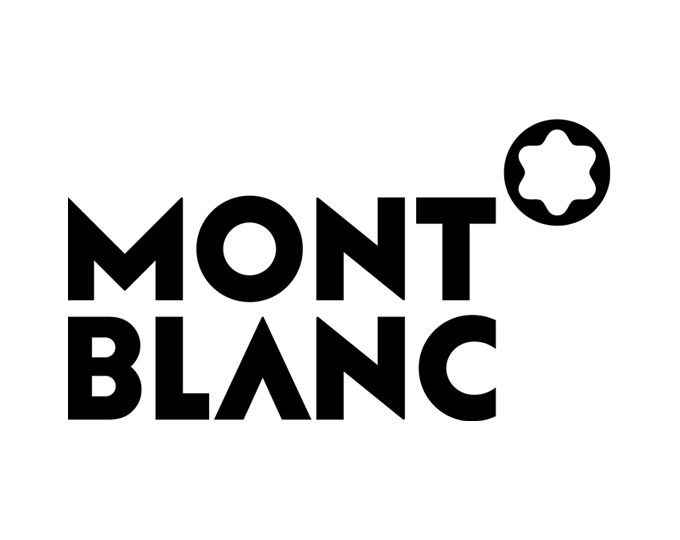

홈 > 브랜드 매거진 > 몽블랑
몽블랑
몽블랑은 필기구를 기록의 도구에서 성취와 품격의 상징으로 끌어올린 브랜드다. 만년필은 기능 제품이지만, 브랜드가 축적한 이미지는 서명, 의사결정, 지적 권위 같은 장면과 결합된다.
산업 분야 패션·럭셔리 · 공개 등급 매거진 완성 · 브랜드 평가 5 ★


한눈에 보는 브랜드
몽블랑은 필기구를 기록의 도구에서 성취와 품격의 상징으로 끌어올린 브랜드다. 만년필은 기능 제품이지만, 브랜드가 축적한 이미지는 서명, 의사결정, 지적 권위 같은 장면과 결합된다.
브랜드 관점
몽블랑은 필기구를 기록의 도구에서 성취와 품격의 상징으로 끌어올린 브랜드다. 만년필은 기능 제품이지만, 브랜드가 축적한 이미지는 서명, 의사결정, 지적 권위 같은 장면과 결합된다.
시작과 성장
몽블랑은 만년필에서 시작해 시계, 가죽 제품 등을 생산하는 독일의 럭셔리 브랜드이다. 장인 정신을 담아 뛰어난 품질의 제품을 수작업으로 생산하고, 문화 예술과 함께하는 브랜드 활동을 전개하며 100년이 넘는 역사를 이어오고 있다.
브랜드 아이덴티티
몽블랑은 장인 정신을 기반으로, 사용자의 삶에 품격을 더해줄 제품을 생산한다. 몽블랑 제품의 최고급 품질과 클래식한 디자인은 성공과 기품있는 삶의 상징이 되었다.
또한, 문화와 예술 분야에 적극적으로 후원하며 브랜드의 가치를 더하고 있다.
제품과 서비스
몽블랑은 장인 정신을 기반으로, 사용자의 삶에 품격을 더해줄 제품을 생산한다. 몽블랑 제품의 최고급 품질과 클래식한 디자인은 성공과 기품있는 삶의 상징이 되었다.
또한, 문화와 예술 분야에 적극적으로 후원하며 브랜드의 가치를 더하고 있다.
현재 상태
국가: 독일 산업: 럭셔리
타임라인
BI/CI 변천사
함께 읽을 브랜드
 패션·럭셔리 · 매거진 완성코치
패션·럭셔리 · 매거진 완성코치코치는 실용적 가죽 제품을 일상적 럭셔리의 영역으로 끌어올린 브랜드다. 과시적 명품보다 접근 가능한 품질과 라이프스타일 이미지를 통해 오래 쓰는 가방의 감각을 브랜드...
 패션·럭셔리 · 편집 검수샤넬
패션·럭셔리 · 편집 검수샤넬샤넬은 패션을 장식이 아니라 태도와 해방의 언어로 바꾼 브랜드다. 브랜드의 힘은 제품의 고급스러움뿐 아니라 여성의 몸과 생활 방식을 새롭게 해석한 상징성에서 나온다.
 패션·럭셔리 · 매거진 완성루이비통
패션·럭셔리 · 매거진 완성루이비통루이비통은 여행가방에서 출발했지만, 이동의 기능을 럭셔리한 삶의 상징으로 확장했다. 브랜드의 헤리티지는 물건을 담는 도구가 아니라 이동하는 사람의 취향과 지위를 표현...
 패션·럭셔리 · 매거진 완성빅토리아 시크릿
패션·럭셔리 · 매거진 완성빅토리아 시크릿빅토리아 시크릿은 속옷을 기능적 제품이 아니라 무대화된 판타지와 자기표현의 이미지로 포장한 브랜드다. 브랜드는 제품보다 쇼, 모델, 시각적 연출을 통해 소비자가 상상...
 패션·럭셔리 · 매거진 완성티파니
패션·럭셔리 · 매거진 완성티파니티파니는 주얼리 자체만큼이나 색과 포장, 선물의 의식을 브랜드 자산으로 만든다. 블루 박스와 매장 경험은 제품을 구매하는 순간을 특별한 사건으로 바꾸며, 브랜드의 상...
 패션·럭셔리 · 편집 검수리바이스
패션·럭셔리 · 편집 검수리바이스리바이스는 청바지를 작업복에서 세대와 태도를 드러내는 문화적 유니폼으로 바꾼 브랜드다. 튼튼한 바지는 시간이 지나며 자유, 젊음, 반항, 일상성을 담는 상징으로 확장...
비비안 웨스트우드(Vivienne Westwood)는 펑크를 주류 패션으로 끌어올린 영국의 독립 럭셔리 패션 브랜드이다.
오메가(OMEGA)는 스위스 스와치 그룹 산하의 럭셔리 시계 제조 브랜드이다.